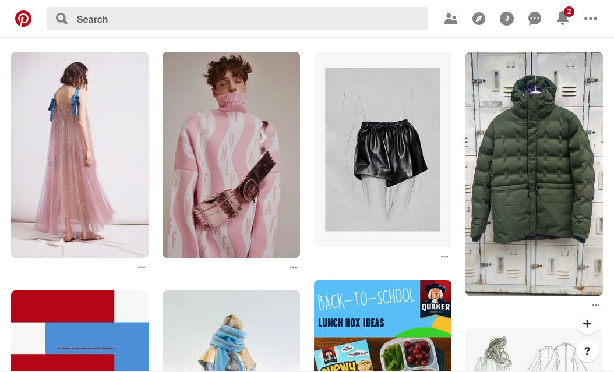
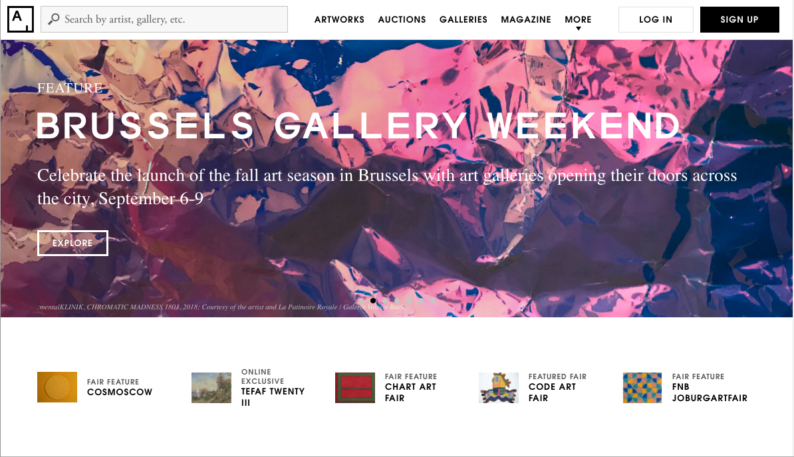

Website Comparison
A Successful Website
A successful website I find is Artsy.net. First and foremost, Artsy.net is the platform for art, artists and art market. The viewers can collect and discover various art pieces and galleries through this website. I think the website approaches its mission well by the website design. This is because the designs and layouts of the website are simple, intuitive and functional. The website has simple layouts so that customers could find something they want with ease. When you search for a specific art piece you can also get information of artist, place and price with a single glance. Also, website provides the trend of art in interesting way. My favorite part of the website is a huge screen part of the home page. The website shows trending or critical issues and information through the huge parts with its unique and eye-catching design. I think that part is one of the most successful point of the website. I think the tab menu is also helpful to navigate the website because the searching options are clear and well-organized. I like the color options part most because it is never seen in other sites. The color option part looks like a small pallet so you can find art piece with just color shades. Finally, I think it is has a responsive design so that people can use the website regardless of the tools like tablets, mobile, desktops, etc. This attribute definitely improves user experience.
A Less Successful Website
A site I fine less practical is Pinterest.com even though I use Pinterest a lot. Pinterest is the site for sharing ideas. A lot of people use this website but I think it is less successful website because the website just provides so much information without any direction. When you log on to the website you can save other’s idea on your board. Based on your interests, Pinterest provides bunch of ideas. I think it blocks navigating to a certain point since unnecessary information comes up with a necessary information. Sometimes, I get inspired by that kind of information but it’s hard to find a necessary one. The huge problem of this website would be too much information going around one. Also, I could not find specific information because the website does not seem to be regulating copyrights. Everyone who save certain image can be copied from others without mentioning details such as artists who create art. You can get a great image but you do not know about any other information of it. Also, I want to mention the page layout. The layout is more hectic rather than clear because the images it displays are all in different sizes. It distracts the view points and even affects immersion level of viewers. Finally, I want to point out the main page because it does not have main page. There is no starting or ending point of searching. I feel like drowning from the sea of information.
